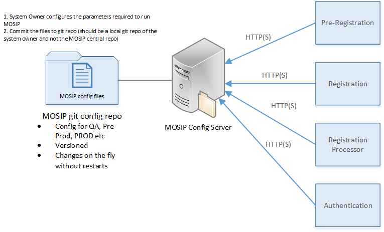

MOSIP Configuration Server¶
We will be using MOSIP config server (Spring cloud configuration Server) to manage configurations of all the services.
NOTE: For the documentation purpose I have mentioned the config server URL as http://localhost:8080 in this document, but you have to mention the URL where configuration server is running.

Git Repo¶
All the configuration files at the moment are stored inside git in
\git\mosip\config
(can be customized to take it from git repo of system owner. Change spring.cloud.config.server.git.search-paths property in config server bootstrap.properties accordingly.)For every module (specific to an environment such as dev, qa, test etc.) there will be a single property file (eg: for kernel)
The nomenclature will be as follows:
{module-name}-{profile-Name}.properties
For example if the application name is kernel and microservice is kernel-idgenerator-vid and profile name can be dev(to differentiate between different environments, eg: testing, dev, qa etc.), so the properties file name will be:
kernel-dev.propertiesIf we are using multiple profiles, say one for dev and one for testing, we can create 2 properties files with names - kernel-test.properties, kernel-dev.properties, and can switch between multiple profiles through Microservice application.
Properties common across the modules will be stored in files named: application-{profile-name}.properties
For XML files, name them as follows:
{NameOfFile}-{profileName}.xml
Microservices Configuration Clients:
¶
Spring boot client
¶
All the microservices will act as clients and reuqest configuration from config server.
Microservices should include spring-cloud-starter-config dependency, which can be added through maven in their pom.xml.
<dependency>
<groupId>org.springframework.cloud</groupId>
<artifactId>spring-cloud-starter-config</artifactId>
</dependency>
For actuators refresh endpoint (to refresh properties at runtime) we need actuator dependency in client
<dependency>
<groupId>org.springframework.boot</groupId>
<artifactId>spring-boot-starter-actuator</artifactId>
<version>${spring.boot.version}</version>
</dependency>
2. There should be one bootstrap.properties file in the spring boot application(microservice) under resources which will contain the details for MOSIP config server. Inside the properties file following properties have to be mentioned:
spring.cloud.config.uri key with the value of URL of config server that will be provided.
spring.cloud.config.label which will define the branch from which we have to get properties from.
spring.profiles.active which will contain the value of profile to be activated (Eg. dev for dev profile, when filename is kernel-dev.properties, and test for test profile when filename is kernel-test.properties).
spring.cloud.config.server.git.search-paths which is the folder inside git repo which contains the configuration files.
spring.application.name name of the application/microservice
spring.cloud.config.name name of module to which the microservice belongs (eg. Kernel, Pre-Registration)
Sample Bootstrap.properties file:
#Port where the application needs to run
server.port = 8081
# Application name - the name appended at starting of file name to differentiate
# between different property files for different microservices
spring.application.name=kernal-idgenerator-vid
#Active Profile - will relate to development properties file in the server.
#If this property is absent then default profile will be activated which is
#the property file without any environment name at the end.
spring.profiles.active=dev
# defining current branch in which we are working as label
spring.cloud.config.label=master
# url where spring cloud config server is running
spring.cloud.config.uri=http://localhost:8080
#spring.cloud.config.name=kernel
spring.cloud.config.server.git.search-paths=config
#exposing refresh endpoint so that whenevr configuration changes in git,
#post /actuator/refresh endpoint can be called for the client microservices
#to update the configuration
management.endpoints.web.exposure.include=refresh
3. Once the setup is done, the microservice/application will be able to fetch the properties from config server. For Example:
/**
*
* RefreshScope annotation is used such that all the rest APIs can be updated by calling
* POST /actuator/refresh endpoint whenever configuration files change in git repo.
*
*/
@RefreshScope
@RestController
class MessageRestController {
protected final Log logger = LogFactory.getLog(this.getClass());
@Value("${msg:Hello world - Config Server is not working..pelase check}")
private String msg;
@RequestMapping("/msg")
String getMsg() {
return this.msg;
}
In the above snippet we are using @RefreshScope annotation which will help the client application to get lastest configuration from config server without restarting the application (by calling the refresh API /actuator/refresh on the application endpoint)
4. For any other configuration file such as xml/json etc. you can directly get the entire file through the following url:
http://{mosip-config-server URL}/{spring.cloud.config.name} /{label} /{branch}/{filename}.(xml/json).
Vert.x client:¶
For Vert.x application we need the following dependencies to be added to our Maven project:
<dependency>
<groupId>io.vertx</groupId>
<artifactId>vertx-config-spring-config-server</artifactId>
<version>3.5.4</version>
</dependency>
<dependency>
<groupId>io.vertx</groupId>
<artifactId>vertx-config</artifactId>
<version>3.5.4</version>
</dependency>We will be using **ConfigRetrieverOptions **in Vert.x and set the store type to "spring-config-server" and we will provide configuration for this type, by giving URL in the following format:
{config-server-url}/{applicationname}-{microservicename}/{profile-name}/{branchname}
protected Future<Void> readConfig(String hoconConfigPath) {
Future<Void> future = Future.future();
/ **
* Adding config options for vert.x application
*/
ConfigRetrieverOptions options = new ConfigRetrieverOptions();
options.addStore(new ConfigStoreOptions()
/**
* Vert.x provides different stores to choose from, right now we are selecting
* spring-config-server to connect to our server
*/
.setType("spring-config-server")
/**
* We are providing URL in the following format -
* <config-server-url>/<application-name-microservicename>/<profile-name>/<branch-name>
* /
.setConfig(new JsonObject().put("url", "http://localhost:8080/kernal-kernel-idgenerator-vid/uin/DEV")
.put("timeout", 10000)));Once the setup is done we can use the ConfigRetriever class object to fetch the configuration as follows:
/**
* ConfigRetriever object to retrieve the configuration stored
*/
ConfigRetriever retriever = ConfigRetriever.create(vertx, options);
retriever.getConfig(ar -> {
if (ar.succeeded()) {
/**
* All the configuration is stored in this configuration object, we can use it anywhere
* to fetch the values by providing the keys
*/
this.configuration = ar.result();
future.complete();
} else {
LOG.error("Failed to read configuration", ar.cause());
future.fail(ar.cause());
}
});
return future;
}Lets assume I put port number in which the application will be running in the properties file, and I need to get that port value while initiating the application, I can get it as follows:
Integer port = Integer.parseInt(configuration.getString("port"));
server = vertx.createHttpServer()
.requestHandler(req ->
req.response().end("I am running on the port fetched from the configuration "
+ "stored in Spring config server")).listen(port);
NOTE:
Whenever there is a change in the configuration in GIT Repo, every microservice/application which is using that particular configuration has to call the refresh endpoint in order to get that latest configuration without restarting. If the client doesnt call the refresh API, it will keep on getting the old configuration.
The refresh end point is following:
POST {Microservice-URL} /actuator/refresh
For Encryption and Decryption of properties you need to generate Keystore, For more information look here
To setup and configure keystore for config server refer to the configuration server README (under mosip -> kernel -> kernel-config-server -> README.md)
To Encrypt any property:
Run the following command :
curl http://<your-config-server-url>/<config-server-application-context-path-if-any>/encrypt -d <value-to-encrypt>
And place the encrypted value in client application properties file with the format:
password={cipher}<encrypted-value>
To Decrypt any property manually:
curl /<config-server-application-context-path-if-any>/decrypt -d <encrypted-value-to-decrypt>
NOTE There is no need to write decryption mechanism in client applications for encrypted values. They will be automatically decrypted by config server as long as {cipher} is prefixed with encrypted value.